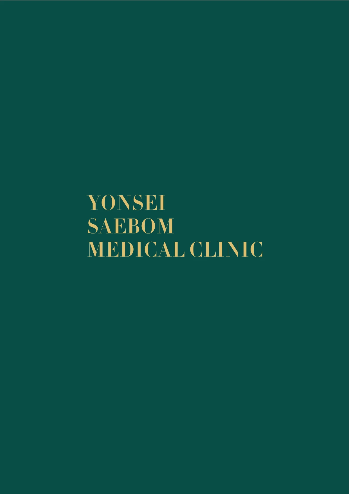
Dr. Yong-Hyun Chae, Director of Yonsei Saebom Medical Clinic
dr187growup.com/en
187 MEDICAL CONSULTING
YONG-HYUN CHAE (DR. CHAE) DOCTOR & DIRECTOR OF YONSEI SAEBOM CLINIC.
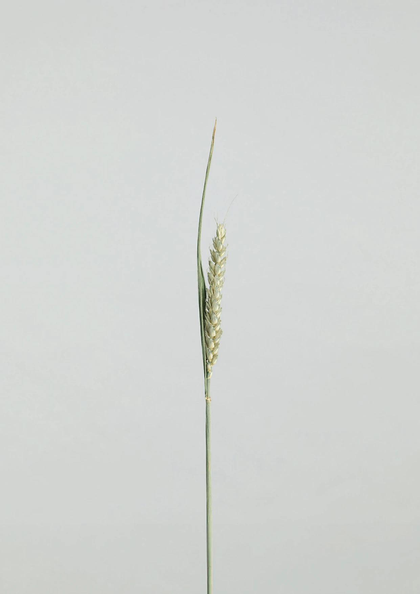
Did you know there is a specific window of time in which a child can grow?
The timing and duration of treatment depend on the child's growth pattern, target height, and the progression of secondary sexual characteristics. However, if the timing is too late, it becomes difficult for a child to grow sufficiently even with growth treatment. We therefore recommend having an evaluation done at the appropriate time. Because the evaluation is separate from treatment, you can have it done without any significant burden.
187 MEDICAL CONSULTING 3
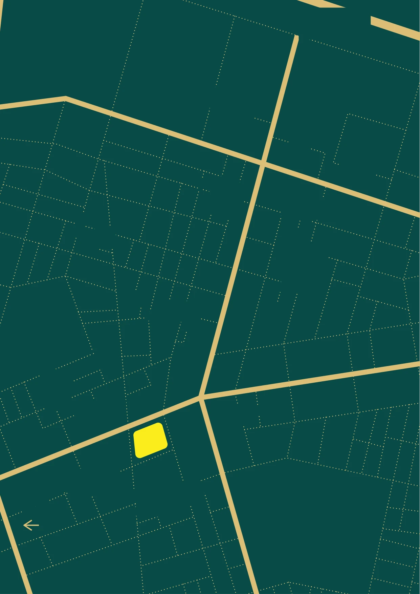
Apgujeong-dong Olympic-daero
Galleria Department Store Luxury Hall WEST
•
K-STAR SM Road
•
Concert 21
•
Apgujeong Rodeo · Subway Cheongdam Station · Fashion Street
•
- Apgujeong Prada, Rodeo Street Louis Vuitton, Cartier, Gucci, Hermès, K Museum of Modern and Contemporary Art, Dosan Park
•
Art•
Maison Hermès · Dosan Park
•
Horim Museum Hakdong Sinsa Branch
•
Intersection
Yonsei Saebom
2nd Floor · 3rd Floor,
Clinic
328 Dosan-daero, Gangnam-gu,
Sinsa-
Seoul, Republic of Korea
dong · Yeongdong High School
•
Clinic Overview
Hospital Name : Yonsei Saebom Medical Clinic
Established : October 5, 2010
Director : Yong-Hyun Chae
Staff : 18 (as of Jan 2023)
Address : 2F & 3F, 328 Dosan-daero, Gangnam-gu, Seoul
5 187 MEDICAL CONSULTING
About Dr. Yong-Hyun Chae
Dr. Yong-Hyun Chae
2002
Graduate, Yonsei University College of Medicine · Graduate School, Yonsei University College of Medicine · Internship and Residency completed at Gangnam Severance Hospital · Recipient of the 2008 Academic Society Award for Outstanding Research Paper
2010
Former Public Relations Advisory Physician for the City of Yongin · IFBB Pro · USPTA Level II Personal Trainer · Physician in charge of athletic performance enhancement for the SSG Landers baseball team · Former Team Doctor for the Nexen Heroes baseball team · Former Medical Advisor to NABBA/WFF · Founder of Yonsei Saebom Medical Clinic, Republic of Korea
2023
Established the Thailand branch of Yonsei Saebom Medical Clinic
2025
Current Director of Yonsei Saebom Medical Clinic – Specialist in Hormone Therapy
• Numerous columns for Golf for Woman, InStyle, Vogue, JoongAng Daily
• Invited lecture for Hana Bank Gangnam Branch Private Banking (Hormones and Aging)
• Invited lecture at Seongdong-gu Welfare Center (Hormones and Healthy Aging; Secrets to a Healthy 100-Year Life)
• Lectures for Incheon Songnim Elementary basketball team & Seoul Bangbae Elementary baseball team – Athlete Growth Clinic
• Appeared on Altoran TV – Ep. 5·6 [7 Truths Hospitals Hide, Part 1·2]
• Hwanggumal (Golden Egg) Ep. 172 [The Twist of Carbs and Fat] · Manmulsang Ep. 118 [Practical Exercise That Changes Your Destiny]
• Live Jeongbotong Ep. 1607 [Smart Health Rules] · Morning Wide Ep. 6399 [Is It Extreme Fatigue?]
• Live This Morning Ep. 2708 [How to Use Sparkling Water! – Immunity Clinic]
• YouTube – @187growup & @yonseisaebom
6 187 MEDICAL CONSULTING
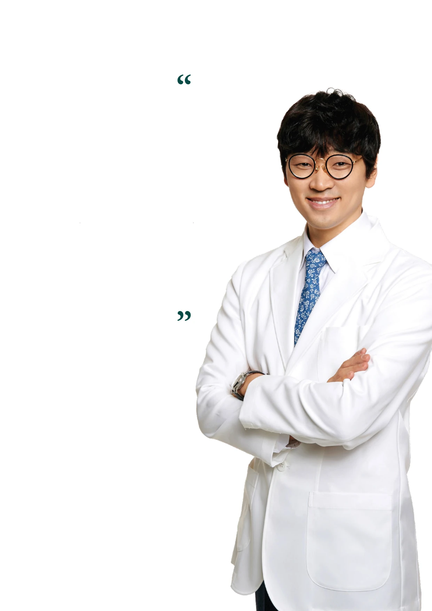
I will do my utmost for the health and happiness of every one of our clients.
Dr. Yong-Hyun Chae
7
WHY
Why is a height-growth program such an essential priority?
187 MEDICAL CONSULTING 8
Appropriate height growth is evidence that a child is developing in good health.
According to Fortune 500 data, the average height of Fortune 500 CEOs is 6 feet 0 inches (183 cm) — about 2.5 inches (6.4 cm) taller than the average American man.
Fortune 500
Bestselling author and speaker Malcolm Gladwell notes that “most of us, in ways that we are not entirely aware of, automatically associate leadership ability with imposing physical stature,” calling it a kind of “unconscious bias.”
Malcolm Gladwell
Height-growth treatment is one way to open up more opportunities for a child.
9 187 MEDICAL CONSULTING
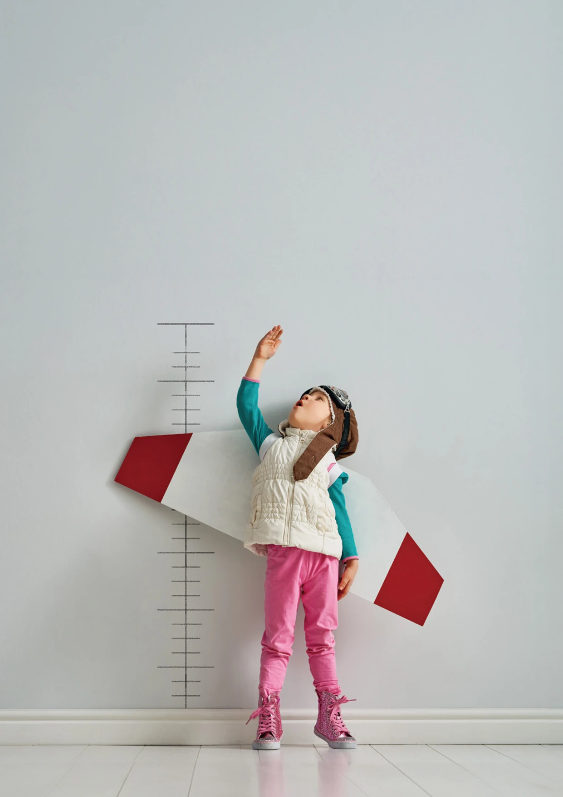
WHY
Which children need height-growth treatment?
187 MEDICAL CONSULTING 10
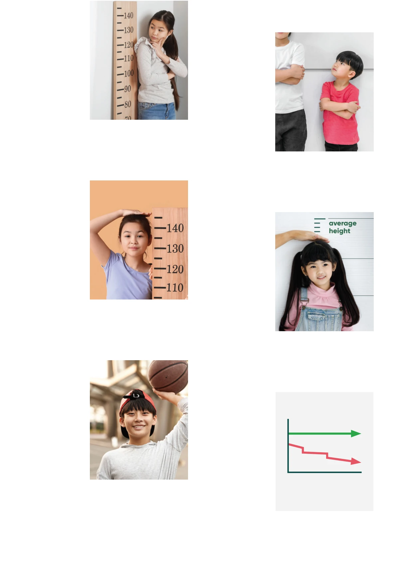
When a child grows less than 4 cm (1.6 inches) in a year. When a child is among the 10 shortest boys or girls in their class.
When a child's growth slows down or suddenly stops. When a child is more than 10 cm (4 inches) shorter than average.
Normal range
Test results
Growth hormone level graph
A child who dreams of becoming an athlete, supermodel, or entertainer. When there is an abnormality in a child's growth hormone levels.
11 187 MEDICAL CONSULTING
PROCESS
What does the treatment process look like?
187 MEDICAL CONSULTING 12
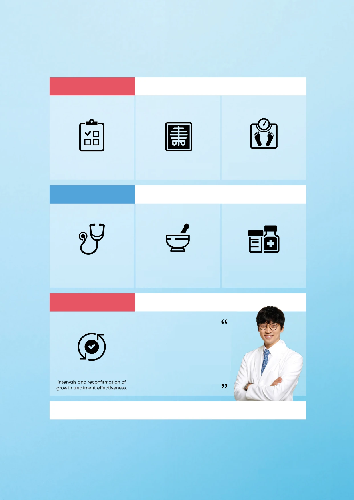
Abroad
Testing and video consultation
01
02
03
Complete a medical questionnaire. Bone age and full-body X-ray examination. Measurement of height, weight, and body composition analysis.
In Korea
Additional testing and treatment
04
05
06
Additional tests: blood and urine · Prescription: individualized hormones · Once-monthly online consultation: measurement
Testing (essential tests), heavy-metal balance, customized nutrition, height·weight·body composition measurement. Hair mineral analysis, precocious puberty (additional testing). Exercise, posture correction, hormones, customized exercise, posture correction, and nutrition prescription management.
Abroad
Continuous monthly monitoring and consultation
07
We promise healthy, balanced growth.
Regular check-ups every 6 months
Continued care for 6 months to 1 year after treatment ends
13 187 MEDICAL CONSULTING
187 MEDICAL CONSULTING
Why 187 Medical Consulting?
06.
Sex hormone, thyroid hormone, and stress management
05.
Posture and balance management
04.
Weight and nutrition management
03.
Sleep management
02.
Height-growth stimulation exercise management
01.
Growth hormone balance
187 MEDICAL CONSULTING 14
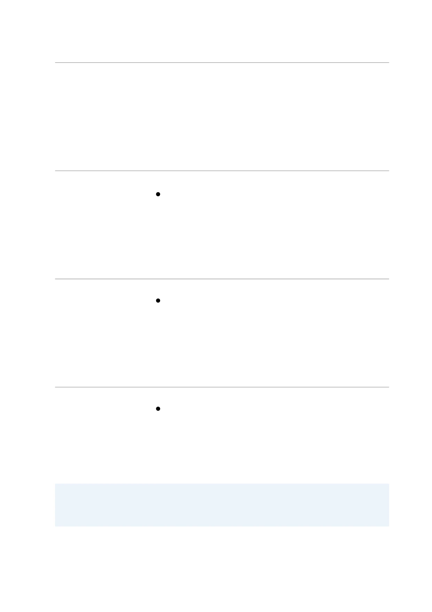
Average
A track record of success with almost no failures – on average,
9cm
every Yonsei Saebom patient grew
UP
9 cm beyond their predicted adult height.
( Based on Korean children )
or more
Over 100,000 treatment cases over the past 10 years
100,000
Together with 3,000 children.
Treatment cases since 2010
Total Care
Sleep management, weight control, nutrition, posture and balance management,
and integrated care extending all the way to puberty management.
Height growth
Safety
A differentiated solution that manages growth, puberty, obesity, nutrition, posture, physical fitness, and even adolescent health conditions.
Close follow-up monitoring. Physical examinations. Regular blood tests.
-> Proven to be a safe treatment
15 187 MEDICAL CONSULTING
SIDE EFFECTS
What are the side effects?
187 MEDICAL CONSULTING 16
Phase 4 clinical trials have demonstrated that there are no serious side effects when growth hormone is administered to patients.
Some children may experience mild side effects while using growth hormone, but these naturally disappear over time.
Known side effects include muscle and joint pain (which resolves over time), swelling (which subsides naturally), hypothyroidism (extremely rare), and headaches caused by increased intracranial pressure (symptoms disappear immediately once treatment is stopped).
We monitor for side effects through continuous, regular check-ups.
No serious adverse reactions
Mild side effects
Known side effects
17 187 MEDICAL CONSULTING
Q&A
Frequently Asked Questions
Q A
1. When is the best time to start?
In pediatric growth treatment, timing has the greatest impact on results. Generally, the best window is ages 8–12 for girls and 9–13 for boys, though this can vary from child to child. Whether treatment is possible and how effective it will be can be confirmed through a consultation.
2. What are the side effects?
Mild side effects (joint pain, swelling, headache, etc.) may appear early on, but they usually resolve by briefly pausing treatment. We repeat tests every 6 months to check for side effects, and through many years of treatment experience it has been confirmed that there are no side effects that persist into adulthood.
3. How much does it cost?
Treatment costs are billed on an annual basis. Generally, 2–3 years of treatment are needed. The cost includes growth hormone management, puberty-progression management, sleep management, growth nutrition management, and corrective-exercise coaching.
187 MEDICAL CONSULTING 18
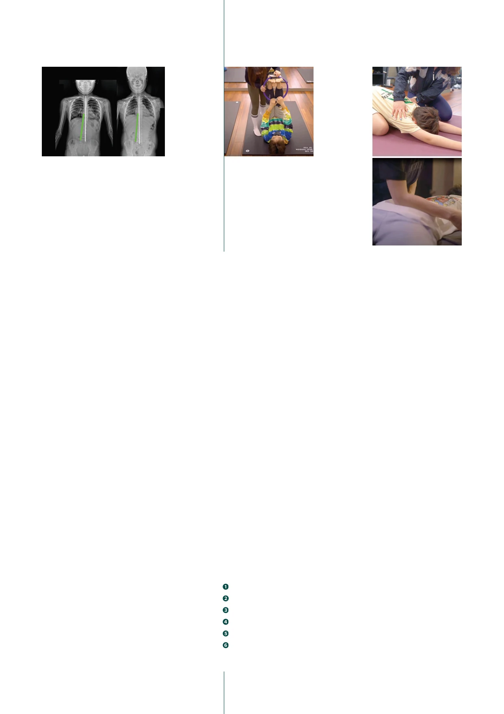
Q A
4. How much will my child grow after treatment?
It depends on the duration of treatment. On average, about 3 years of treatment can yield roughly 8 cm of additional growth, and the effect varies depending on genetic factors, sex, lifestyle habits, and whether precocious puberty is present.
5. How is the success of treatment evaluated?
Every 6 months, X-rays are used to confirm how much more the child has matured compared to the average child of the same age (one who has not received treatment).
6. How long does treatment take?
Several years of treatment are required. Typically, with 2–3 years of treatment a child gets close to their target height. However, this can vary somewhat depending on the timing of treatment, sex, stage of pubertal development, bone age, and other factors.
7. What kind of treatment is needed?
We provide integrated management of every aspect related to growth, as follows.
Growth hormone
Balance of hormones that affect growth
Puberty-progression management
Sleep
Height-growth nutrition management
Height-growth exercise and body-axis corrective exercise
19 187 MEDICAL CONSULTING
We are committed to contributing to the health and happiness of children.
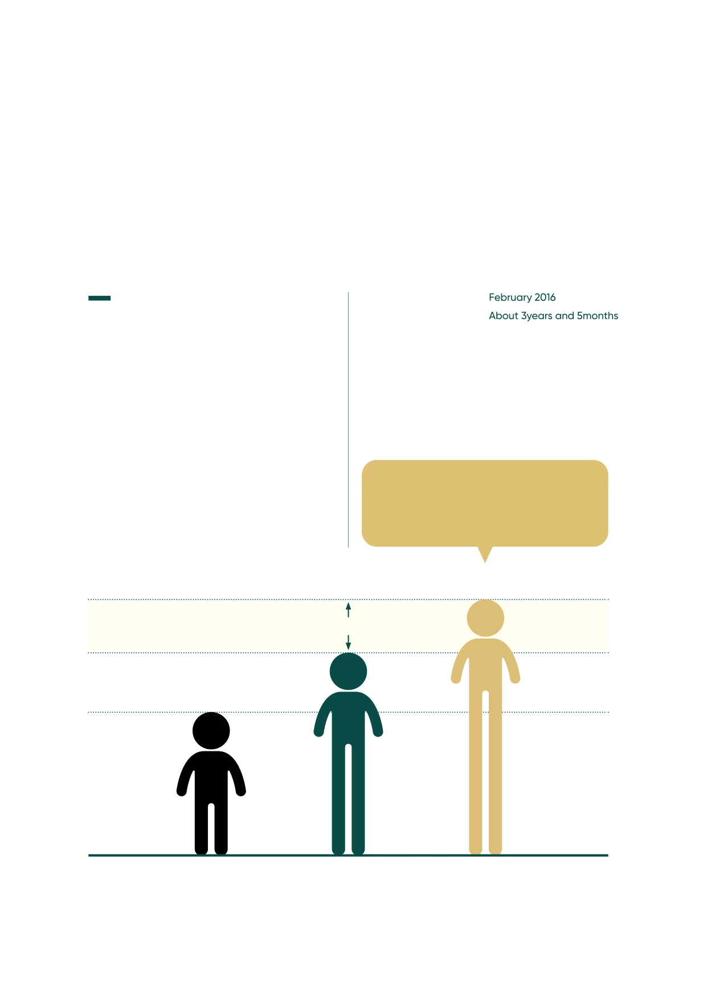
Appendix · Case 01
Grew 11 cm beyond predicted height
11-year-old boy
First visit date
Baseball player /
Treatment period
About 3 yrs 5 mo
February 2016
Kim OO
Grew 11 cm beyond predicted height
11cm
First-visit height 141.5 cm · Predicted adult height 167 cm · Final height 178.3 cm
187 MEDICAL CONSULTING 22
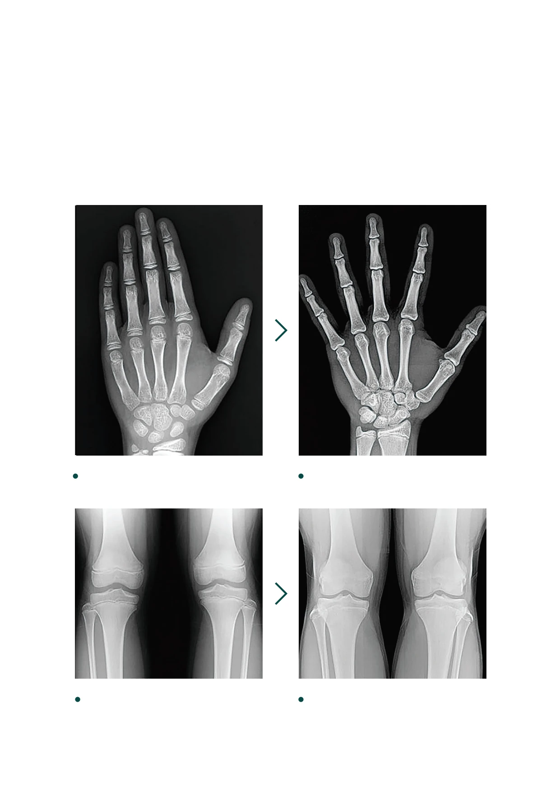
Kim OO X-ray, before treatment
It is important to understand the appropriate growth level at each stage and to
and after-treatment photos
adjust treatment and lifestyle habits accordingly.
BeforeAfter 3 yrs 5 mo
BeforeAfter 3 yrs 5 mo
23 187 MEDICAL CONSULTING
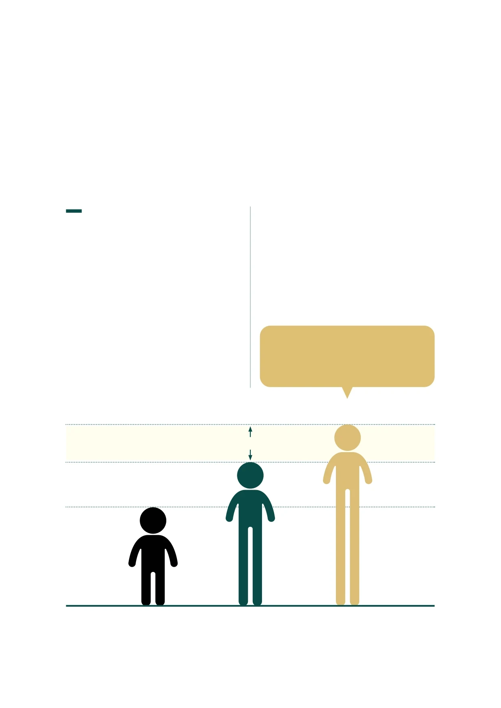
Case 02 · Appendix
Grew 8 cm beyond predicted height
11-year-old boy
First visit date
Baseball player /
Treatment period
About 3 years
May 2019
Choi OO
Grew 8 cm beyond predicted height
8cm
First-visit height 148.6 cm · Predicted adult height 178 cm · Final predicted height 186 cm
187 MEDICAL CONSULTING 24
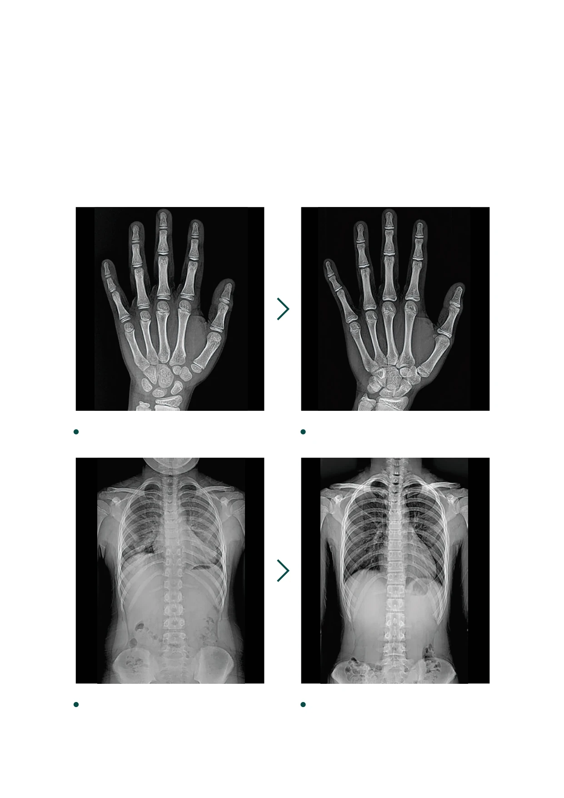
Choi OO X-ray, before treatment
It is important to understand the appropriate
and after-treatment photos
growth level at each stage and to adjust treatment and lifestyle habits accordingly.
BeforeAfter 3 years
BeforeAfter 3 years
25 187 MEDICAL CONSULTING
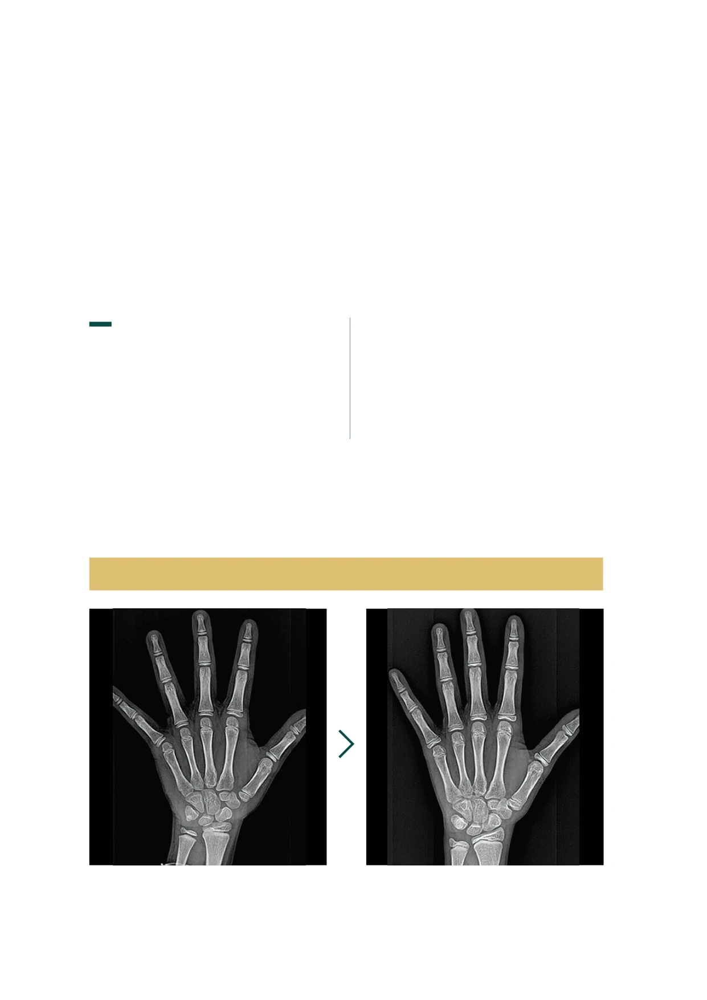
Appendix · Case 03
Grew 4.7 cm more than the average growth rate
9-year-old girl
First visit date
Dancer /
Treatment period
About 2 years
July 2020
Lee OO
First-visit height 137 cm · Predicted adult height 163 cm · Current height 153.7 cm
(9-year-old girl, grew an average of 12 cm over 23 months)
Lee OO X-ray, before treatment
It is important to understand the appropriate
and after-treatment photos
growth level at each stage and to adjust treatment and lifestyle habits accordingly.
* This case was combined with body-posture corrective exercise.
Before treatment · 2 years after treatment
187 MEDICAL CONSULTING 26
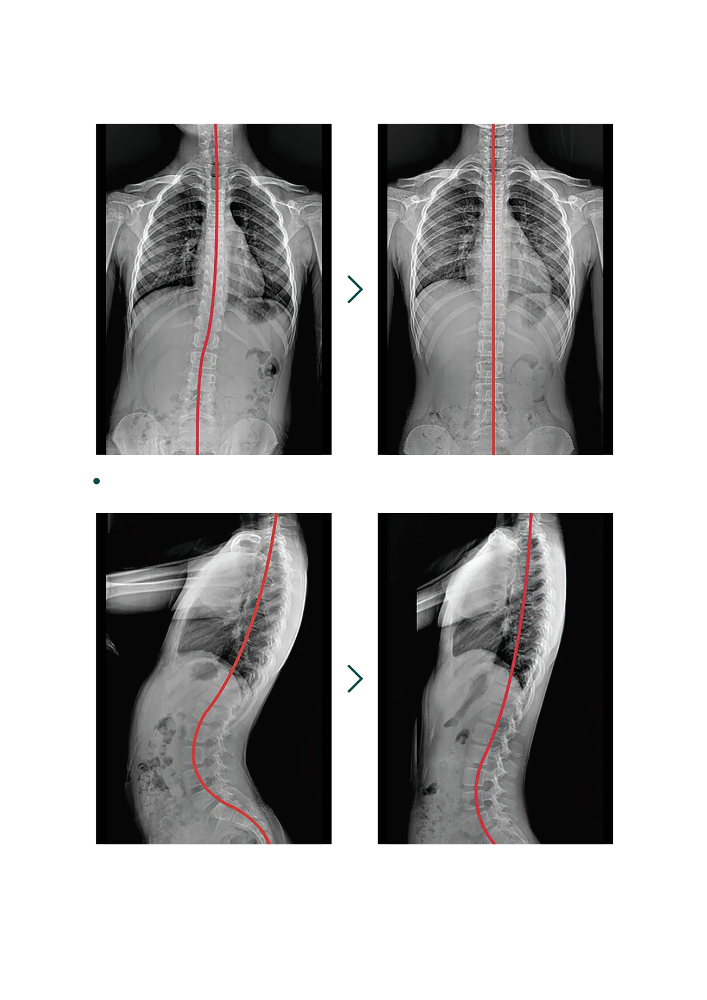
BeforeAfter 2 years
BeforeAfter 2 years
27 187 MEDICAL CONSULTING
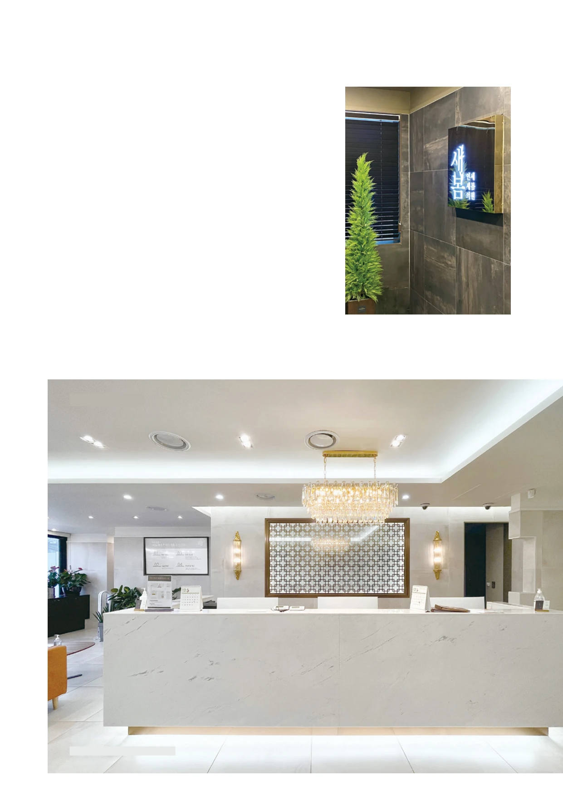
Appendix · Clinic Facilities
2nd Floor:
Hormone Therapy Specialty Center / Reception Desk
Clinic entrance
Reception desk
YONSEI SAEBOM MEDICAL CLINIC 46
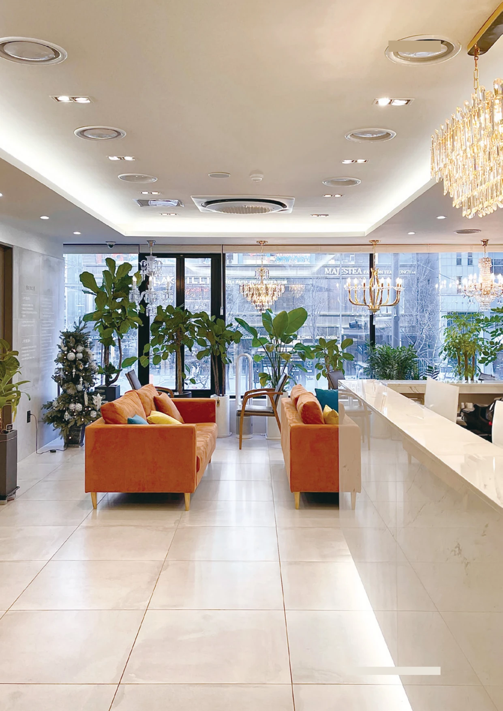
Waiting room
47 YONSEI SAEBOM MEDICAL CLINIC
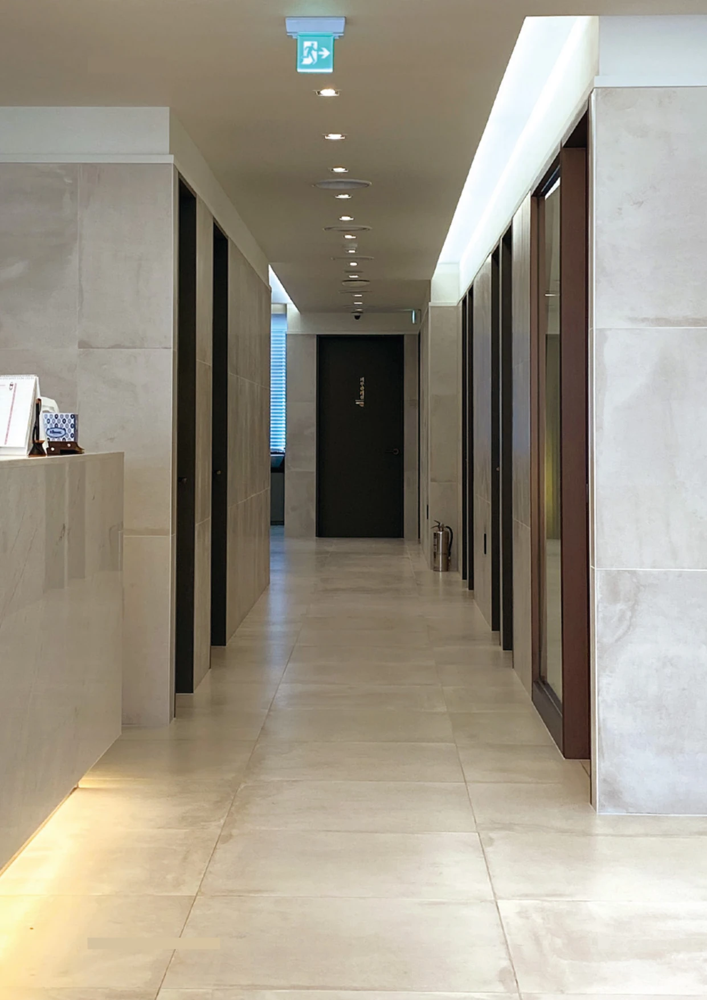
Consultation room
YONSEI SAEBOM MEDICAL CLINIC 48
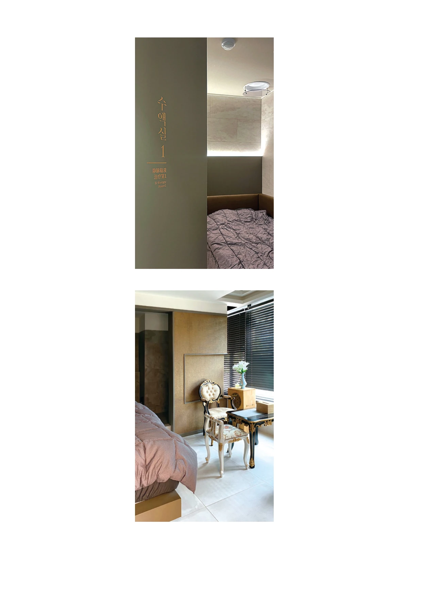
Treatment room
Consultation room
49 YONSEI SAEBOM MEDICAL CLINIC
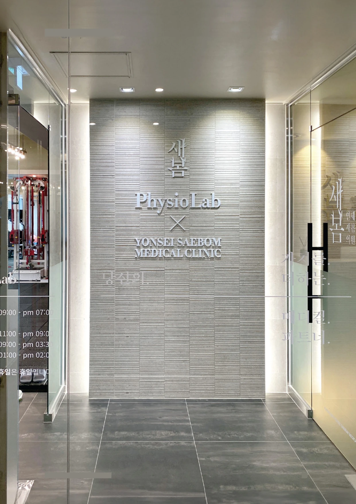
3rd-floor entrance
YONSEI SAEBOM MEDICAL CLINIC 50
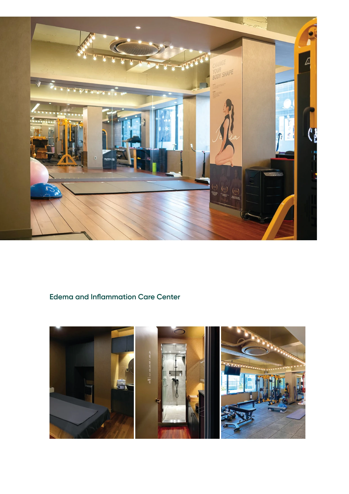
Exercise room
3rd Floor:
187 GROWUP and Body-Correction Exercise Center /
Edema & Inflammation Care Center
Body care room · Shower room · Changing room · Exercise room
51 YONSEI SAEBOM MEDICAL CLINIC
WHO
Which celebrities have visited Yonsei Saebom?
YONSEI SAEBOM MEDICAL CLINIC 52
CELEBRITY FANS (Korea)
Actor | Song Hye-kyo
- The Glory - Descendants of the Sun
- The Priests
Actor | Ju Ji-hoon
- The Trauma Code - Along With the Gods: The Two Worlds - Goong
53 YONSEI SAEBOM MEDICAL CLINIC
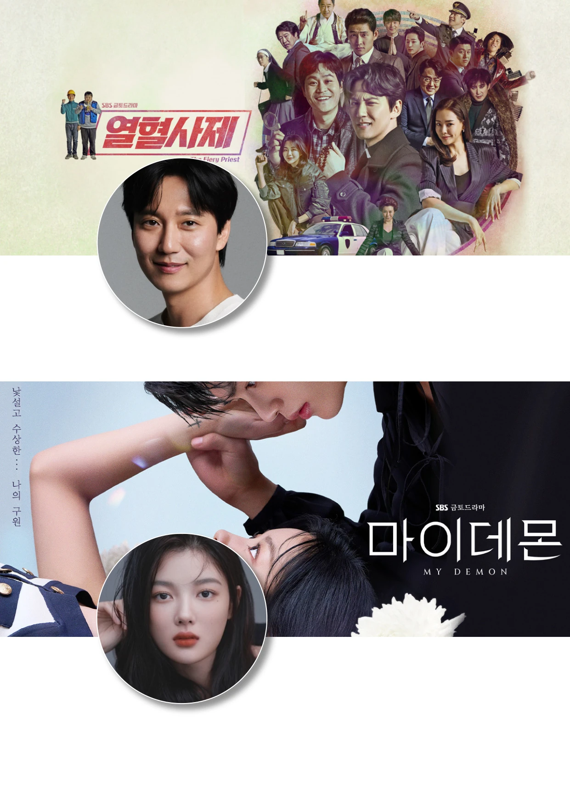
Actor | Kim Nam-gil
- The Fiery Priest - Broken
- Bad Guy
Actor | Kim Yoo-jung
- My Demon - Commitment - Love in the Moonlight
YONSEI SAEBOM MEDICAL CLINIC 54
Actor | Gong Hyo-jin
- When the Camellia Blooms - The Producers
- Pasta
Actor | Han Ji-min
- Our Blues - One Spring Night - Familiar Wife
55 YONSEI SAEBOM MEDICAL CLINIC
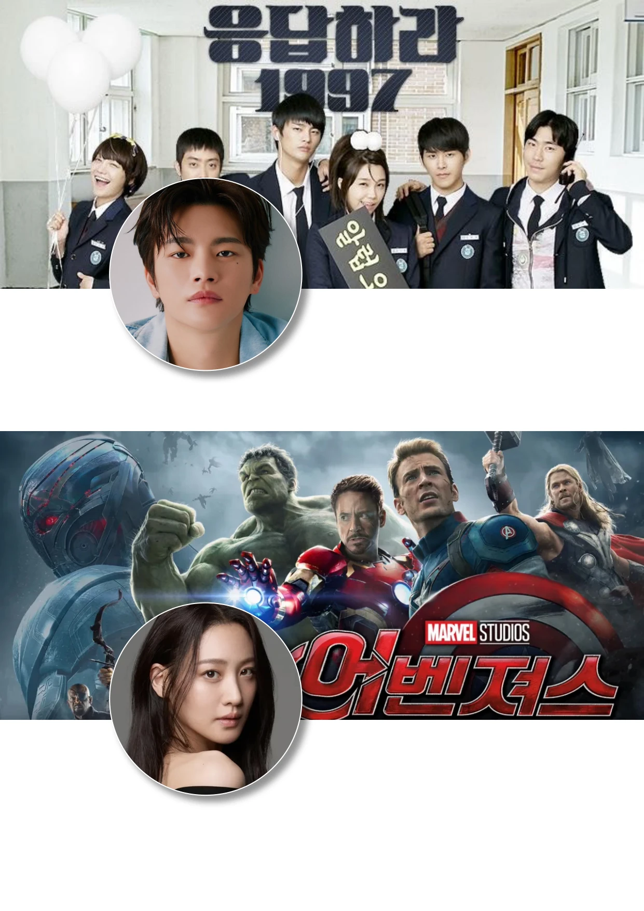
Actor | Seo In-guk
- Reply 1997 - A Killer Paradox
- Doom at Your Service
Actor | Soo Hyun (Claudia Kim)
- Avengers: Age of Ultron - Fantastic Beasts: The Crimes of Grindelwald - Gyeongseong Creature
YONSEI SAEBOM MEDICAL CLINIC 56
Actor | Uhm Ji-won
- Birthcare Center - Little Women
- Master
Actor | Kim So-hyun
- Love Alarm - Who Are You: School 2015 - I Hear Your Voice
57 YONSEI SAEBOM MEDICAL CLINIC
CELEBRITY FANS (Korea)
Singer | G-DRAGON & Daesung
Singer | Red Velvet
YONSEI SAEBOM MEDICAL CLINIC 58
Singer | SHINee Key
Singer | KiiiKiii Jiyu
59 YONSEI SAEBOM MEDICAL CLINIC
Singer | Haha
Singer | Lee Hyo-ri
YONSEI SAEBOM MEDICAL CLINIC 60
CELEBRITY FANS (Korea)
Ambassador |
Abdulah Saif Al Nuaimi
Singer | Lee Hi
61 YONSEI SAEBOM MEDICAL CLINIC
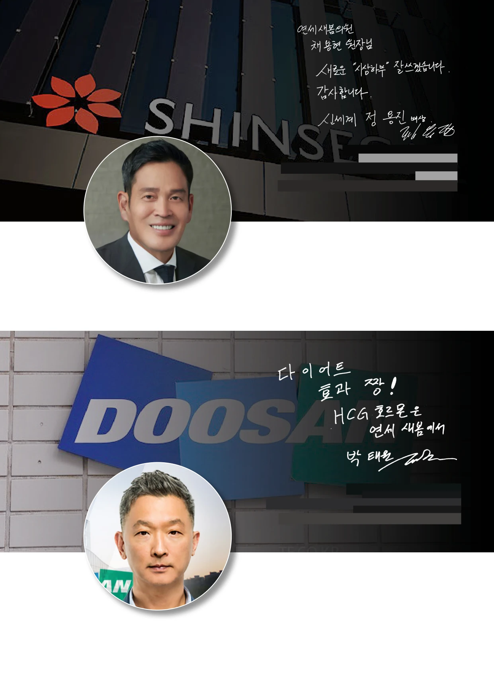
Dr. Yong-Hyun Chae of Yonsei Saebom Medical Clinic, I will put the new equipment to good use. Thank you. From Yong-Jin Chung, Shinsegae
Ambassador | Yong-Jin Chung
Dr. Yong-Hyun Chae of Yonsei Saebom Medical Clinic, what an incredible weight loss! When it comes to hormones, it has to be Yonsei Saebom. From Tae-won Park, Doosan Engineering & Construction
Ambassador | Tae-won Park
YONSEI SAEBOM MEDICAL CLINIC 62
Dr. Yong-Hyun Chae of Yonsei Saebom Medical Clinic, thank you. It was truly a great help. From Jeong-eun Hyun, Hyundai
Ambassador | Jeong-eun Hyun
Dr. Yong-Hyun Chae of Yonsei Saebom Medical Clinic, thanks to this remarkable program I feel reborn. From Young-rok Lim, Shinsegae Prime
Ambassador | Young-rok Lim
63 YONSEI SAEBOM MEDICAL CLINIC
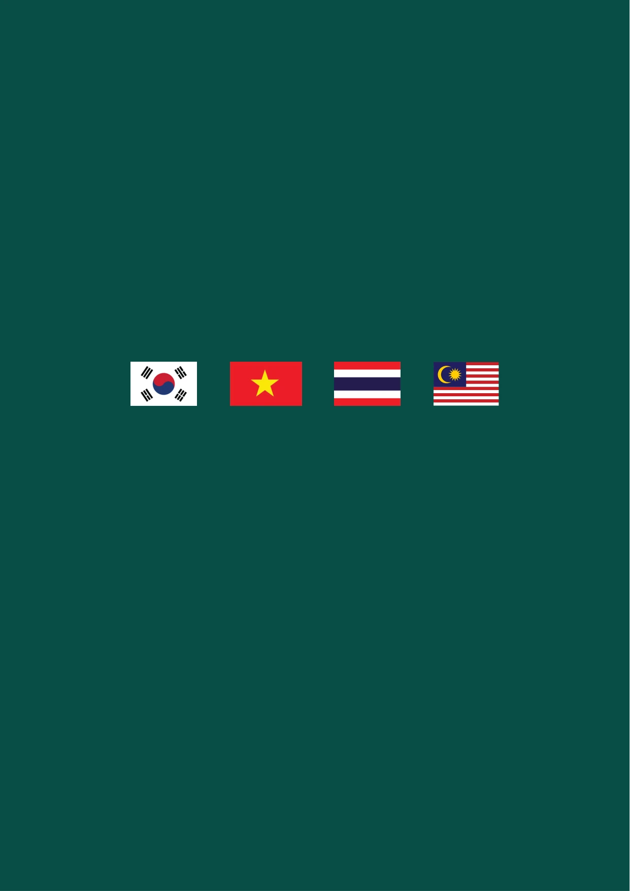
Global Business
YONSEI SAEBOM MEDICAL CLINIC 64
65 YONSEI SAEBOM MEDICAL CLINIC
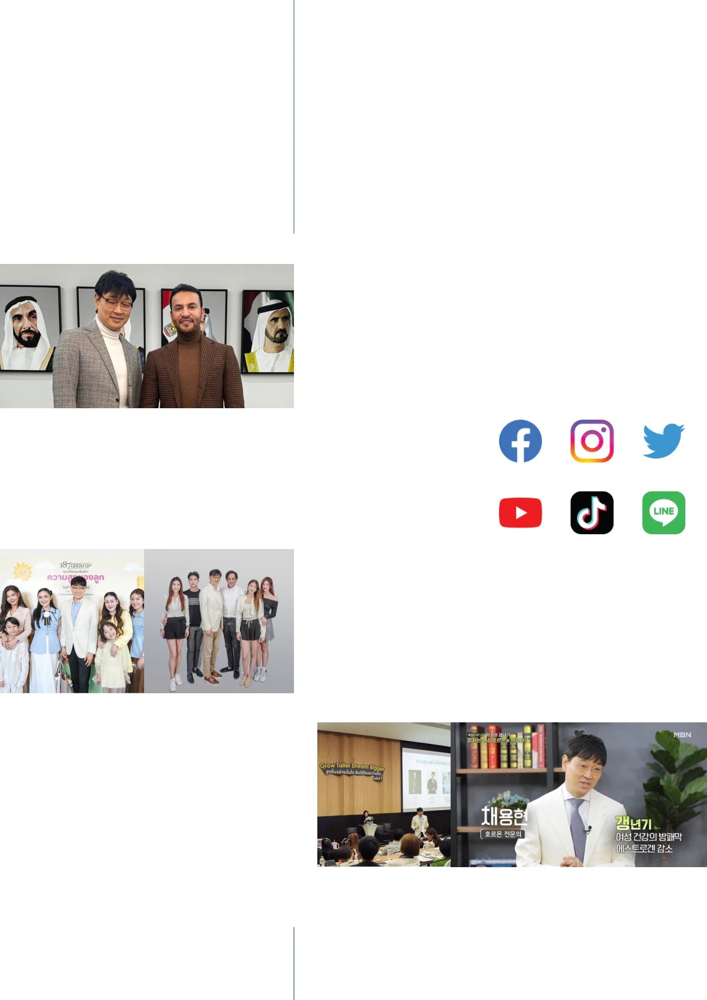
Global Business
Global Office
1. Marketing
- VIP network
- Social media advertising
- Influencers
- Seminar promotions, and more
YONSEI SAEBOM MEDICAL CLINIC 66
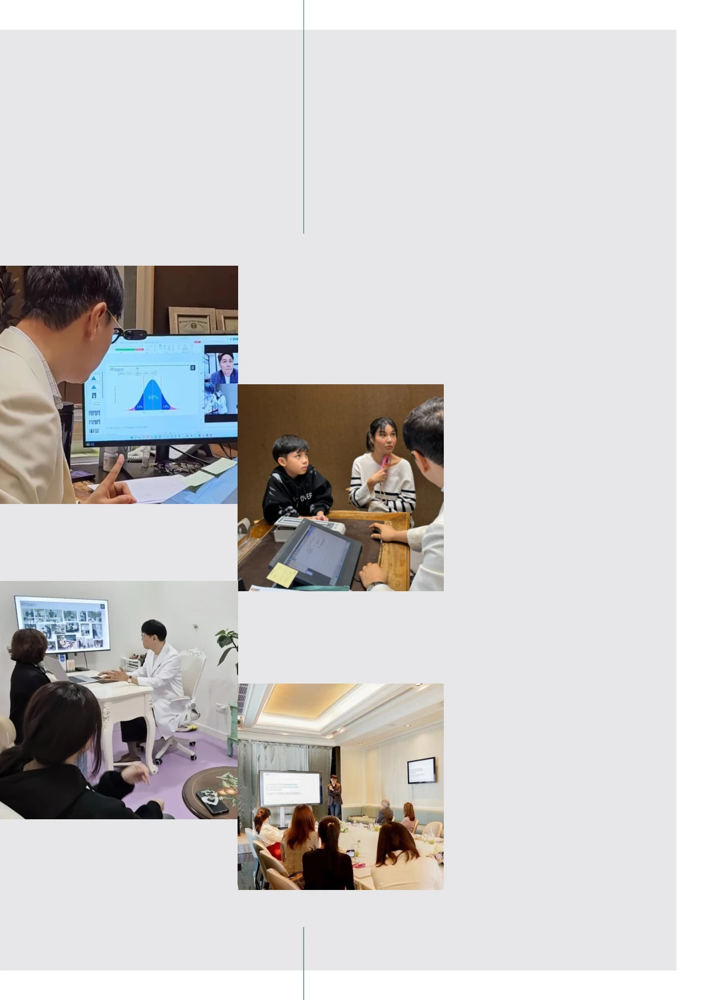
Global Business
Global Office
2. Support
- Remote consultation with Korea
- Visits to the main clinic in Korea
- One global visit per month
- One global seminar per month
67 YONSEI SAEBOM MEDICAL CLINIC
We will be by your side as your medical partner.
YONSEI SAEBOM MEDICAL CLINIC 68
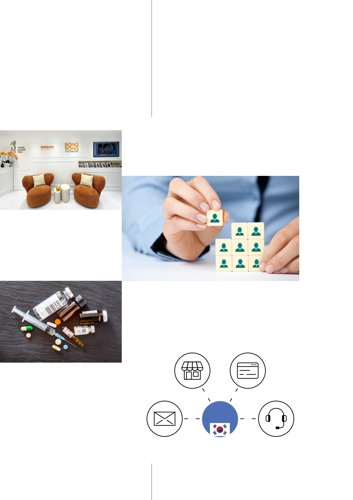
Global Business
Global Office
3. Management
- Global office operations
- Client scheduling management
- Inventory management
- Support operations
69 YONSEI SAEBOM MEDICAL CLINIC
Your partner of choice · Yonsei Saebom Medical Clinic
187 MEDICAL CONSULTING
YONG-HYUN CHAE (DR. CHAE) DOCTOR & DIRECTOR OF YONSEI SAEBOM CLINIC.
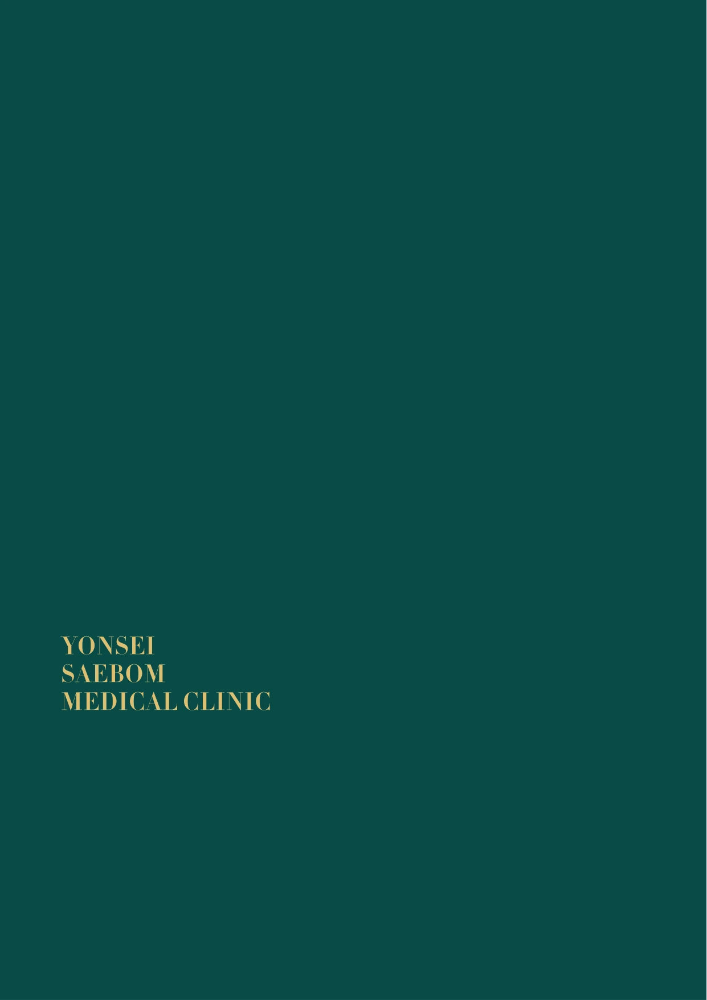
187 MEDICAL CONSULTING
We are committed to contributing to the health and happiness of children.
YONG-HYUN CHAE (DR. CHAE) DOCTOR & DIRECTOR OF YONSEI SAEBOM CLINIC.